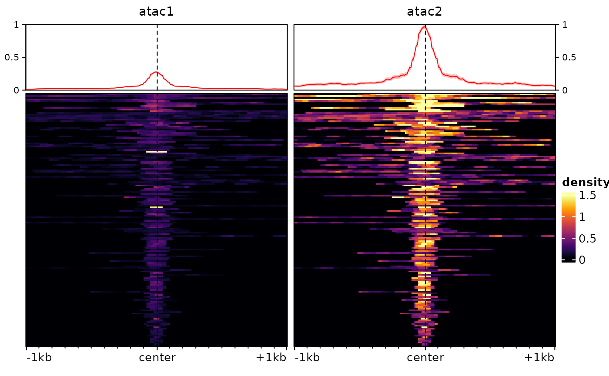
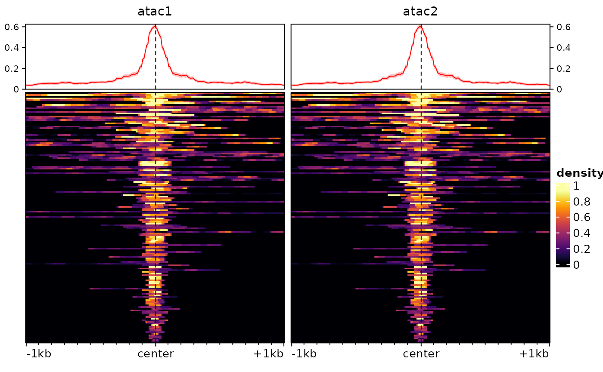

Normalizing genomic signals
Pierre-Luc Germain
Lab of Statistical Bioinformatics, University of Zürich;D-HEST Institute for Neuroscience, ETH Zürich, Switzerlandnormalization.RmdAbstract
This vignette covers the functions for normalizing genomic
signals. Since this is illustrated with visualization, it is
recommended that you read the bam2bw and
multiRegionPlot vignettes first.
Introduction
epiwraps includes two ways of calculating normalization
factors: either from the signal files (e.g. bam or bigwig files), which
is the most robust way and enables all options, or from an
EnrichmentSE object (see the
multiRegionPlot vignette for an intro
to such an object) or signal matrices. In both cases, the logic is the
same: we estimate normalization factors (mostly single linear scaling
factors, although some methods involve more complex normalization), and
then apply them to signals that were extracted using
signal2Matrix().
Applying normalization factors when generating the bigwig files
It is possible to also directly use computed normalization factors
when creating bigwig files. By default, the
bam2bw() function scales using
library size, which can be disabled using scaling=FALSE.
However, it is also possible to pass the scaling argument a
manual scaling factor, as computed by the functions described here. In
this vignette, however, we will focus on normalizing signal
matrices.
Obtaining normalization factors for a set of signal files
The getNormFactors() function can be used to estimate
normalization factors from either bam or bigwig files. The files cannot
be mixed (bam/bigwig), however, and it is important to note that
normalization factors calculated on bam files cannot be applied to
data extracted from bigwig files, or vice versa, because the bigwig
files are by default already normalized for library size. If needed,
however, getNormFactors() can be used to apply the same
method to both kind of files.
Normalization methods
Simple library size normalization, as done by bam2bw(),
is not always appropriate. The main reasons are 1) that different
samples/experiments can have a different signal-to-noise ratio, with the
result that more sequencing is needed to obtain a similar coverage of
enriched region; 2) that there might be global differences in the amount
of the signal of interest (e.g. more or less binding, globally, in one
cell type vs another); and 3) that there might be differences in
technical biases, such as GC content. For these reasons, different
normalization methods are needed according to circumstances and what
assumptions seem reasonable. Here is an overview of the normalization
methods currently implemented in epiwraps via the
getNormFactors() function:
- The ‘background’ or ‘SES’ normalization method (they are synonyms here) assumes that the background noise should on average be the same across experiments (Diaz et al., Stat Appl Gen et Mol Biol, 2012), an assumption that works well in practice and is robust to global differences in the amount of signal when there are not large differences in signal-to-noise ratio.
- The ‘MAnorm’ approach ( Shao et al., Genome Biology 2012) assumes that regions that are commonly enriched (i.e. common peaks) in two experiments should on average have the same signal in the two experiments.
- The ‘enriched’ approach assumes that enriched regions are on average similarly enriched across samples. Contrarily to ‘MAnorm’, these regions do not need to be in common across samples/experiments. This is not robust to global differences.
- The ‘top’ approach assumes that the maximum enrichment (after some trimming) in peaks is the same across samples/experiments.
- The ‘S3norm’ (Xiang et al., NAR 2020) and ‘2cLinear’ methods try to normalize both enrichment and background simultaneously. S3norm does this in a log-linear fashion (as in the publication), while ‘2cLinear’ does it on the original scale.
The normalization factors can be computed using
getNormFactors() :
suppressPackageStartupMessages(library(epiwraps))
# we fetch the path to the example bigwig file:
bwf <- system.file("extdata/example_atac.bw", package="epiwraps")
# we'll just double it to create a fake multi-sample dataset:
bwfiles <- c(atac1=bwf, atac2=bwf)
nf <- getNormFactors(bwfiles, method="background")## Comparing coverage in random regions...
nf## atac1 atac2
## 1 1In this case, since the files are identical, the factors are both 1.
Some normalization methods addtionally require peaks as input, e.g.:
peaks <- system.file("extdata/example_peaks.bed", package="epiwraps")
nf <- getNormFactors(bwfiles, peaks = peaks, method="MAnorm")## Comparing coverage in peaks...(Note that MAnorm would normally require to have a list of peaks for each sample/experiment).
Once computed, the normalization factors can be applied to an
EnrichmentSE object:
sm <- signal2Matrix(bwfiles, peaks, extend=1000L)## Reading /home/runner/work/_temp/Library/epiwraps/extdata/example_atac.bw
## Reading /home/runner/work/_temp/Library/epiwraps/extdata/example_atac.bw
sm <- renormalizeSignalMatrices(sm, scaleFactors=nf)
sm## class: EnrichmentSE
## 2 tracks across 150 regions
## assays(2): normalized input
## rownames(150): 1:195054101-195054250 1:133522798-133523047 ...
## 1:22224734-22224983 1:90375438-90375787
## rowData names(0):
## colnames(2): atac1 atac2
## colData names(0):
## metadata(0):The object now has a new assay, called normalized, which
has been put in front and therefore will be used for most downstream
usages unless the uses specifies otherwise. Note that for any downstream
function it is however possible to specify which assay to use via the
assay argument.
Obtaining normalization factors from the signal matrices themselves
It is also possible to normalize the signal matrices using factors
derived from the matrices themselves, using the
renormalizeSignalMatrices function. Note that this is
provided as a ‘quick-and-dirty’ approach that does not have the
robustness of proper estimation methods. Specifically, beyond providing
manual scaling factors (e.g. computed using
getNormFactors), the function includes two methods :
-
method="border"works on the assumption that the left/right borders of the matrices represent background signal which should be equal across samples. As such, it can be seen as an approximation of the aforementioned background normalization. However, it will work only if 1) the left/right borders of the matrices are sufficiently far from the signal (e.g. peaks) to be chiefly noise, and (as with the main background normalization method itself) 2) the signal-to-noise ratio is comparable across tracks/samples. -
method="top"instead works on the assumption that the highest signal (after some eventual trimming of the extremes) should be the same across tracks/samples.
To illustrate these, we will first introduce some difference between our two tracks using arbitrary factors:
sm <- renormalizeSignalMatrices(sm, scaleFactors=c(1,4), toAssay="test")
plotEnrichedHeatmaps(sm, assay = "test")
Then we can normalize:
sm <- renormalizeSignalMatrices(sm, method="top", fromAssay="test")
# again this adds an assay to the object, which will be automatically used when plotting:
plotEnrichedHeatmaps(sm)## Using assay topNormalized
And we’ve recovered comparable signal across the two tracks/samples.
Session information
## R version 4.4.3 (2025-02-28)
## Platform: x86_64-pc-linux-gnu
## Running under: Ubuntu 24.04.2 LTS
##
## Matrix products: default
## BLAS: /usr/lib/x86_64-linux-gnu/openblas-pthread/libblas.so.3
## LAPACK: /usr/lib/x86_64-linux-gnu/openblas-pthread/libopenblasp-r0.3.26.so; LAPACK version 3.12.0
##
## locale:
## [1] LC_CTYPE=C.UTF-8 LC_NUMERIC=C LC_TIME=C.UTF-8
## [4] LC_COLLATE=C.UTF-8 LC_MONETARY=C.UTF-8 LC_MESSAGES=C.UTF-8
## [7] LC_PAPER=C.UTF-8 LC_NAME=C LC_ADDRESS=C
## [10] LC_TELEPHONE=C LC_MEASUREMENT=C.UTF-8 LC_IDENTIFICATION=C
##
## time zone: UTC
## tzcode source: system (glibc)
##
## attached base packages:
## [1] grid stats4 stats graphics grDevices utils datasets
## [8] methods base
##
## other attached packages:
## [1] epiwraps_0.99.107 EnrichedHeatmap_1.36.0
## [3] ComplexHeatmap_2.22.0 SummarizedExperiment_1.36.0
## [5] Biobase_2.66.0 GenomicRanges_1.58.0
## [7] GenomeInfoDb_1.42.3 IRanges_2.40.1
## [9] S4Vectors_0.44.0 BiocGenerics_0.52.0
## [11] MatrixGenerics_1.18.1 matrixStats_1.5.0
## [13] BiocStyle_2.34.0
##
## loaded via a namespace (and not attached):
## [1] RColorBrewer_1.1-3 rstudioapi_0.17.1 jsonlite_1.9.0
## [4] shape_1.4.6.1 magrittr_2.0.3 magick_2.8.5
## [7] GenomicFeatures_1.58.0 rmarkdown_2.29 GlobalOptions_0.1.2
## [10] fs_1.6.5 BiocIO_1.16.0 zlibbioc_1.52.0
## [13] ragg_1.3.3 vctrs_0.6.5 memoise_2.0.1
## [16] Rsamtools_2.22.0 RCurl_1.98-1.16 base64enc_0.1-3
## [19] htmltools_0.5.8.1 S4Arrays_1.6.0 progress_1.2.3
## [22] curl_6.2.1 SparseArray_1.6.2 Formula_1.2-5
## [25] sass_0.4.9 bslib_0.9.0 htmlwidgets_1.6.4
## [28] desc_1.4.3 plyr_1.8.9 Gviz_1.50.0
## [31] httr2_1.1.0 cachem_1.1.0 GenomicAlignments_1.42.0
## [34] lifecycle_1.0.4 iterators_1.0.14 pkgconfig_2.0.3
## [37] Matrix_1.7-2 R6_2.6.1 fastmap_1.2.0
## [40] GenomeInfoDbData_1.2.13 clue_0.3-66 digest_0.6.37
## [43] colorspace_2.1-1 AnnotationDbi_1.68.0 textshaping_1.0.0
## [46] Hmisc_5.2-2 RSQLite_2.3.9 filelock_1.0.3
## [49] httr_1.4.7 abind_1.4-8 compiler_4.4.3
## [52] bit64_4.6.0-1 doParallel_1.0.17 backports_1.5.0
## [55] htmlTable_2.4.3 BiocParallel_1.40.0 DBI_1.2.3
## [58] UpSetR_1.4.0 biomaRt_2.62.1 rappdirs_0.3.3
## [61] DelayedArray_0.32.0 rjson_0.2.23 tools_4.4.3
## [64] foreign_0.8-88 nnet_7.3-20 glue_1.8.0
## [67] restfulr_0.0.15 checkmate_2.3.2 cluster_2.1.8
## [70] generics_0.1.3 gtable_0.3.6 BSgenome_1.74.0
## [73] ensembldb_2.30.0 data.table_1.17.0 hms_1.1.3
## [76] xml2_1.3.7 XVector_0.46.0 foreach_1.5.2
## [79] pillar_1.10.1 stringr_1.5.1 limma_3.62.2
## [82] circlize_0.4.16 dplyr_1.1.4 BiocFileCache_2.14.0
## [85] lattice_0.22-6 deldir_2.0-4 rtracklayer_1.66.0
## [88] bit_4.5.0.1 biovizBase_1.54.0 tidyselect_1.2.1
## [91] locfit_1.5-9.11 pbapply_1.7-2 Biostrings_2.74.1
## [94] knitr_1.49 gridExtra_2.3 bookdown_0.42
## [97] ProtGenerics_1.38.0 edgeR_4.4.2 xfun_0.51
## [100] statmod_1.5.0 stringi_1.8.4 UCSC.utils_1.2.0
## [103] lazyeval_0.2.2 yaml_2.3.10 evaluate_1.0.3
## [106] codetools_0.2-20 interp_1.1-6 GenomicFiles_1.42.0
## [109] tibble_3.2.1 BiocManager_1.30.25 cli_3.6.4
## [112] rpart_4.1.24 systemfonts_1.2.1 munsell_0.5.1
## [115] jquerylib_0.1.4 dichromat_2.0-0.1 Rcpp_1.0.14
## [118] dbplyr_2.5.0 png_0.1-8 XML_3.99-0.18
## [121] parallel_4.4.3 pkgdown_2.1.1 ggplot2_3.5.1
## [124] blob_1.2.4 prettyunits_1.2.0 jpeg_0.1-10
## [127] latticeExtra_0.6-30 AnnotationFilter_1.30.0 bitops_1.0-9
## [130] viridisLite_0.4.2 VariantAnnotation_1.52.0 scales_1.3.0
## [133] crayon_1.5.3 GetoptLong_1.0.5 rlang_1.1.5
## [136] cowplot_1.1.3 KEGGREST_1.46.0